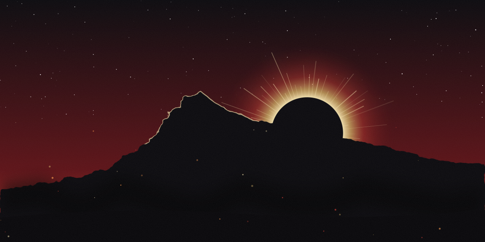

Le duel au katana
Parez à la dernière seconde pour déclencher la Contre-lune, brisez la posture adverse et portez le Coup de l'Éclipse.
Studio Flexarion · Aix-en-Provence
Le Soleil Noir s'est éteint. Le Shogun a fait de sa lumière une arme. Vous êtes Kaïen, dernier samouraï du clan Hoshino, ramené à la vie trois siècles trop tard pour sauver les vôtres, mais juste à temps pour les venger.
L'univers
Au-delà de la Bordure, le Shogunat de Kurogane règne sur le système de Yomi. Sept châteaux orbitaux, les Shiro, gravitent autour d'une étoile éclipsée : le Soleil Noir. Depuis la Grande Éclipse, sa lumière est captive, et ceux qui la gardent sont devenus des monstres.
Ronin of the Black Sun est un jeu de science-fiction qui emprunte au Japon féodal ses codes, ses armures et ses légendes, et les projette dans l'espace : des pagodes en orbite, des torii flottants, des duels au katana dans le silence du vide.

Le jeu
Action-RPG exigeant, Ronin of the Black Sun vous demande d'observer, de parer et de frapper au bon moment. Mourir fait partie du chemin du ronin.
Parez à la dernière seconde pour déclencher la Contre-lune, brisez la posture adverse et portez le Coup de l'Éclipse.
Entre les débris des châteaux orbitaux, il n'y a ni haut ni bas. Prenez appui sur le vide et frappez depuis n'importe quel angle.
Reposez-vous aux Torii de lumière, récupérez vos Cendres d'étoile là où vous êtes tombé, et choisissez l'ordre de vos combats.
Les ennemis
Chaque Shiro est gardé par un seigneur corrompu par la lumière du Soleil Noir. Armures démesurées, techniques interdites, arènes sans gravité : chaque Daimyō est un combat que vous n'oublierez pas.


Le studio
Flexarion est un studio indé de quatre développeurs fondé en 2023 à Aix-en-Provence. Nous faisons des jeux de science-fiction exigeants et beaux, à taille humaine, sans crunch et en racontant notre travail en toute transparence.
Notre premier jeu, Ronin of the Black Sun, porte notre devise : comme l'acier d'un katana, plier sans jamais rompre.
Journal de développement

Six couleurs, des silhouettes lisibles à dix mètres et un soleil qui ne brille plus : les règles qui donnent son identité visuelle à Ronin of the Black Sun.
Lire le devlog →
Dix images pour parer, une barre de posture à briser et des combats sans sol ni plafond : comment nous avons conçu les duels au katana de Ronin of the Black Sun.
Lire le devlog →
Un croquis à l'encre, une éclipse au-dessus de la Sainte-Victoire et une question : que devient l'honneur d'un samouraï quand son soleil s'éteint ?
Lire le devlog →Questions fréquentes
Flexarion est un studio de jeux vidéo indépendant basé à Aix-en-Provence. Son premier jeu, Ronin of the Black Sun, est un souls-like de science-fiction où vous incarnez un ronin, un samouraï sans maître, dans un empire spatial inspiré du Japon féodal.
Flexarion développe Ronin of the Black Sun, un action-RPG exigeant de type souls-like. On y combat au katana, avec un système de parade et de posture, y compris dans des zones en apesanteur. Découvrir le jeu.
Le studio Flexarion est installé à Aix-en-Provence (13100), dans les Bouches-du-Rhône, en Provence-Alpes-Côte d'Azur, dans un ancien atelier d'imprimeur près du cours Mirabeau.
Une démo jouable est prévue au printemps 2027, suivie d'un accès anticipé sur PC (Windows, Steam Deck visé) à la fin de l'année 2027.
L'idée est née d'un projet de groupe à l'IUT d'Aix-en-Provence, où les quatre fondateurs de Flexarion étudiaient l'informatique. Un croquis à l'encre, un ronin face à un soleil éclipsé, est devenu le point de départ du jeu. Lire le premier devlog.
« Flex » vient du latin flectere, fléchir : comme l'acier d'un katana, replié des dizaines de fois, qui plie sans rompre. « Arion » est le poète grec sauvé des flots par un dauphin charmé par son chant. Lire l'histoire du studio.
L'équipe publie chaque mois un devlog sur les coulisses du jeu. Vous pouvez aussi vous abonner au flux RSS ou écrire au studio pour rejoindre les playtests. Lire le devlog.
Rejoindre la voie
Presse, créateurs de contenu ou joueurs : écrivez-nous pour recevoir le kit presse ou rejoindre le prochain playtest de Ronin of the Black Sun.